Rexpansive Builder
Insert. Expand. Done!
As of today creating a layout is simple, you’ll realize as soon as you insert photos, videos or texts.
With a straightforward expansion your layouts will be spectacular!
Try here, right now!
If you have any doubt, please visit the documentation at this link
Installation and setting Plugin Rexpansive Builder
As soon as the file zip “Es: 100-rexpansive-builder.zip” has been downloaded, follow this procedure..
Go to “Plugins” then click on “Add New”, and after that the text “Upload Plugin” will appear. Then, select the file that you have just downloaded and click on “Install Now” and wait for downloading to be complete. Finally, after checking that installation is complete, remember to activate it.
To visualize the Rexpansive Builder on post, page, product or other sections present in the
theme, it is necessary to go to “Settings” and then select “Rexpansive Builder”. As you will see, you just have to select the section where you want it to appear. Then you can activate or deactivate the animations.
Right, now that we have configured it, we can have fun creating our page! So, go to “Pages” and then “Add New”. Check you can see the builder and you can deactivate it at any moment through the switch placed at the top of the builder. Great, now, all that’s left to do is create your first page with Rexpansive Builder! Have fun!
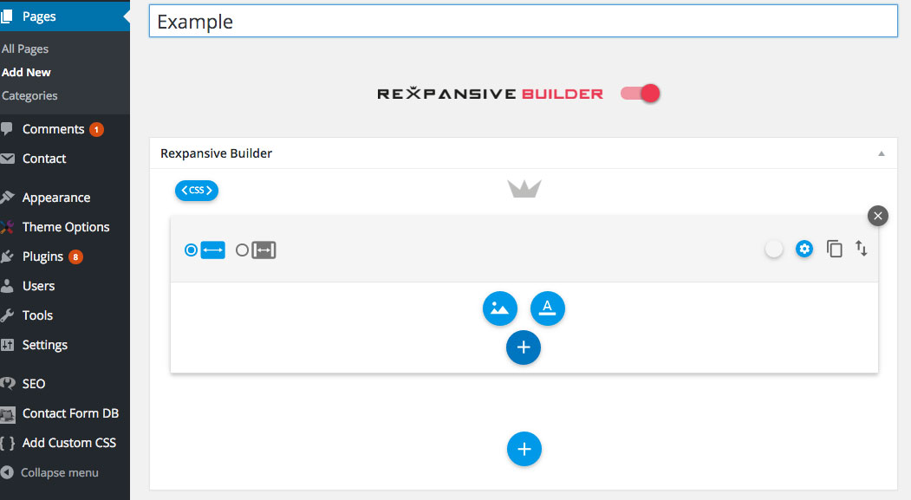
Row Settings
Each Row can contain an infinite number of Blocks in it, which will be arranged according to a grid of 12 columns and structured in two distinct areas:
An upper part, where all of the configuration tools of the Row are to be found;
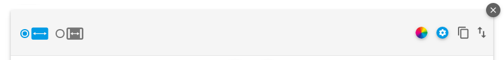
A lower part, the work grid, where you will visualize and manage your contents.
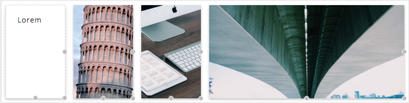
Full & Boxed
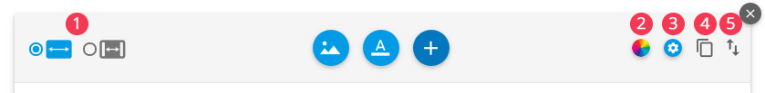
1. In the upper left part of the upper area of a Row, there are the Full and Boxed options.
On selecting Full the contents of the Row will occupy the width of the screen. This is the predefined option for each new Row.
However, if you select Boxed, the contents appears in the center of the screen, leaving a distance between the margins of the page. The predefined dimensions of the area in which the contents are visualized is 80 % of the screen width; however, it is possible to define the dimensions of this area in detail through the Row Option (link).
2. Background
On pressing this button a dialogue window will open through which it is possible to define the settings of the background of the Row.
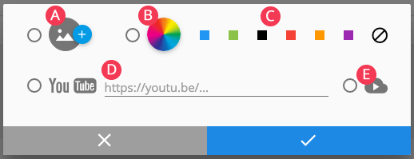
A. Clicking on this button the WordPress media library will open, through which you can choose a background image for the Row.
B. Clicking on this button the color selection tool will open
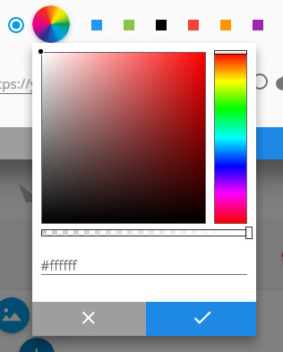
By moving the vertical bar into the rectangular area on the right, it is possible to choose the color hue desired; moving the black circle in the main square area it is possible to choose the specific shade of the color desired. Using the lower vertical bar it is possible to choose the degree of transparency to give to your color.
Alternatively, if you know the hexadecimal code of the color that you want to insert, you can put it into the area of lower text.
C. Through the color palette supplied you can choose the color to give to your Row, simply by clicking on one of the colored squares; should you want a transparent background just click on the forbidden button at the bottom of the palette.
D. It is possible to insert links to a YouTube video of your choice through this area of text, to use it as background for your Row; just copy and paste the url of the video you want into this space;
E. You can insert a video directly from your WordPress video library using this button: once the button is pressed, a window will open from which you can select or load your video in MP4 format.
Settings
3. On pressing this button, you will open a dialogue window through which you can define the different features of a Row.
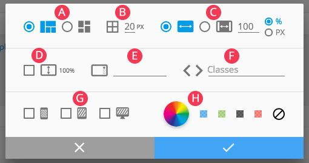
CSS Editor
For the geeks among you: you can manage all the settings that you want through the CSS Editor by inserting your code, in this way you will have all the freedom to personalize as much as you want. The editor also provides alerts for correct writing of you CSS.
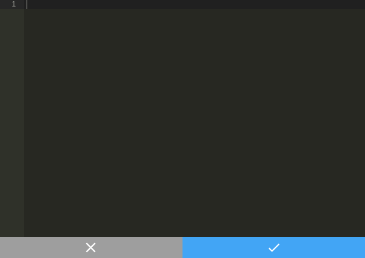
Block Space
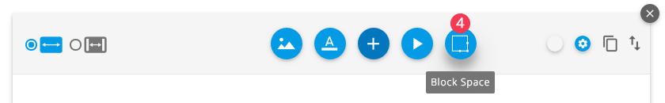
4. On clicking on the “Block Space” icon in the extra tools of the Row you can insert an “invisible” Block into the grid; thanks to this function it is possible to produce creative layouts, arranging the Blocks in a precise way and with the distances you wish.
Block Settings
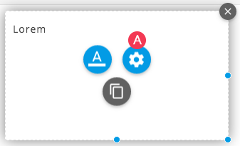
A.As soon as you move the cursor onto a block, actions buttons will appear. By clicking on the button with the gears, a dialogue window will open shown here below through which you can define the different options.
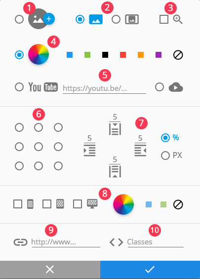
1. By clicking on this button you can insert, or potentially modify, the image present in the block, using as usual the Media Library.
2. With these two selection buttons, you can define the type of image that will be contained in the block, i.e. if “Full” or “Natural”:
A. With “Full” it will take up the whole of the area of the block available;
B.With “Natural” , on the other hand, it will take up the maximum space possible in the block, maintaining the original proportions of the image;
3. Photo Zoom: this selection box allows you to activate or deactivate the zoom on the image present in the block;
4. In this area of the window, it is possible to define the color of the background;
5. With these two options you can define or modify the background video;
6. Thanks to these selection buttons you can define the arrangement of the text in it;
7. In this area of the window you can define the distance of the contents of the margins in a Block; you can specify the distance separately for the four sides, defining the value in pixels or in percentage;
8. Thanks to these instruments you can define any overlay in the Block; This is a really useful function when we have to insert text over the image but how many times does it happen that the title can’t be read because the color is similar to the background photo. Thanks to this function you can create a personalized color ‘veil’ (H), between the image and the text. Finally, you can decide on which device (cell phone, tablet and desktop) to visualize this function activating one of the three selection boxes
9. In this text box you can specify an external link which to connect your Block to;
10. In this box you can insert the CSS classes to further personalize your Block.
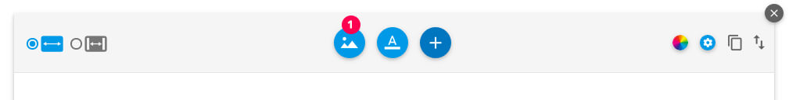
1. Image
To insert photos just click on the “Image” icon to enter your Media Library and you will be able to select one or more photos at the same time (CMD + click or SHIFT + click) after which click on “Select” to add them on. As you can see the photos are inserted on your grid and now all you need to do is enlarge or reduce the photo.By holding down the mouse button on one of the circles at the extremities of your image, you can widen or lengthen the photo and as soon as you have finished just lengthen the photo.
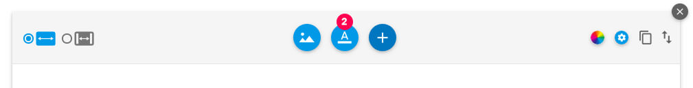
2. Text
Click on the icon “A” and the WordPress text editor will appear from which you can insert your description. Thanks to the alignment functions (2.1), the system allows you to vertically align the text at the top, in the center or at the bottom. Finally, thanks to the padding (2.2) you can move (pixel o %) your text as you wish.
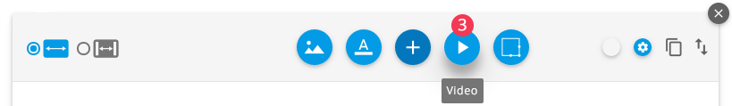
3. To insert a Block with a video in it, just click on the “Video” icon found in the extra tools of every Row. On clicking, a dialogue window opens through which you can insert the video, specifying a link to YouTube or selecting it directly from the WordPress Media Library.
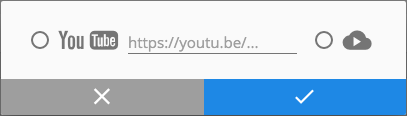
After having chosen the format and having confirmed the operation, create the new Block in the Row, which you will be able to manage freely just like the others; to identify the presence of a video in the Block, a specific icon can be pictured.
A. Masonry
Use this function if you don’t want to touch the natural proportions of the image and the length of texts. In other words, the builder will let you visualize your contents as they are, even if this causes staggered alignments in height but which are organized.
B. Grid
If you wish your page to be neat and aligned, then this is the function for you. For instance, if I have a page with two columns, where on the left I have a lot of text and on the right a photo, but I want the image on the right to be as long as the text, then, as you will see, this option will work for you as the system will align everything for you.